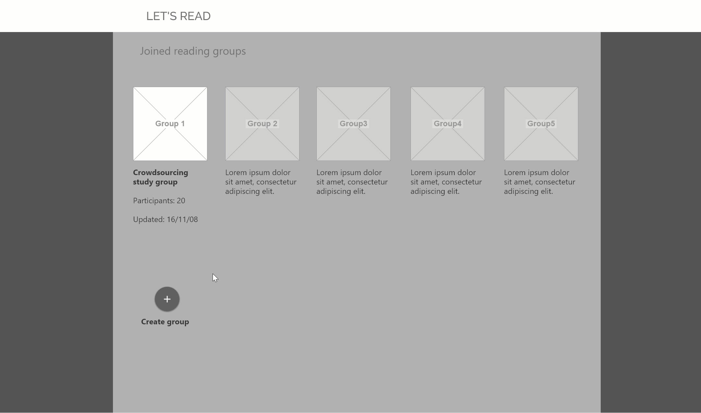
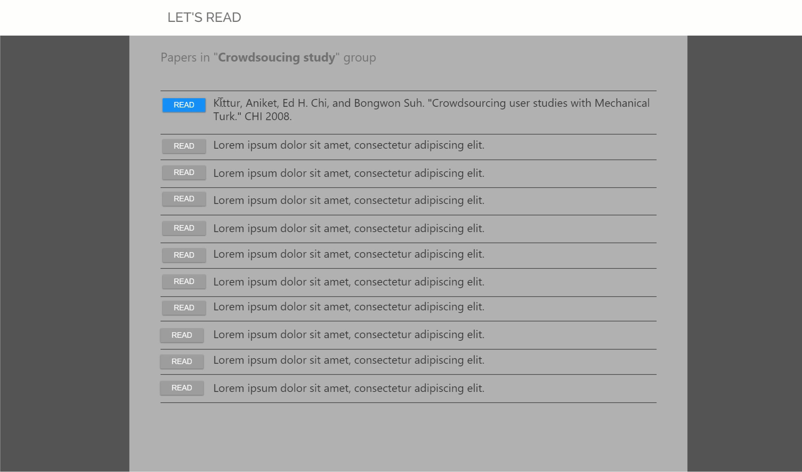
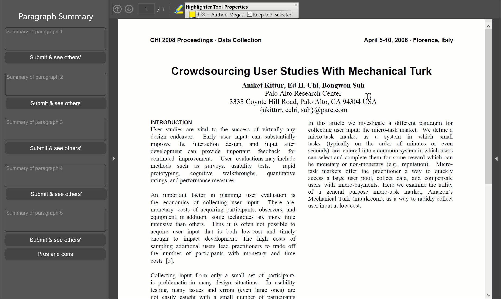
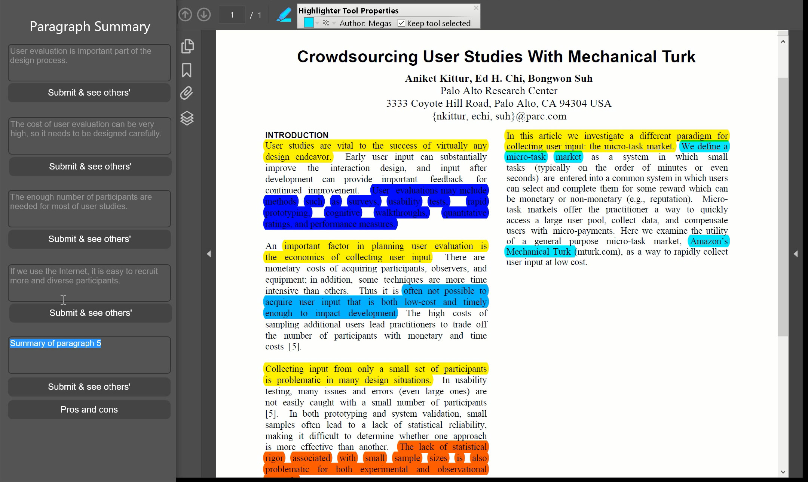
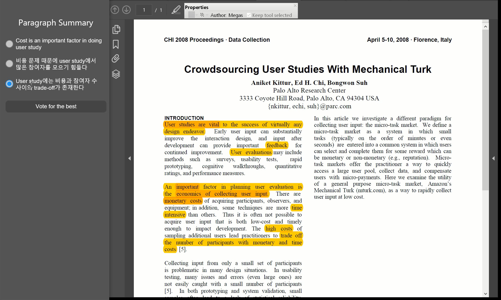

Milestone 5: Mid-Fi Prototype
- 20164320 Junsoo Park
- 20164350 Youngbo Shim
- 20164352 Sang-Gyun An
Problem Statement
- Researchers face difficulties in reading scientific papers of unfamiliar fields with a good level of understanding.
Tasks
- Highlight important bits of text with different colors while reading a paper (not implemented yet)
- Formulate one-sentence summary for each paragraph
- (Please check the attached video to see overall workflow including highlighting)
Instructions
- Since our system is not available online yet, and also it needs complex set up process to run in local, we provide you some GUI concept video of our program.
- The video was taken during the low-fi user study step, which is actually controlled by a reader who is new to this system.
- Below is the instruction we ordered to the user. Some tasks such as pros/cons are removed from our design, so you don't need to pay attention to this. -If you want to check actual web page designs we used, you might want to look in HTML folder in our submission.
[Sign in]
- Click ‘Sign in’ button
[Group selection view]
 - Click ‘Group 1’ among joined reading groups
[Paper selection view]
 - Click ‘Read’ button of the first paper among registered papers within the group
[Paper reading view]

 - While reading a paper, use multi-color highlight tool (not implemented yet) - After reading each paragraph, write and submit your summary
[Group result view]
 - After submitting each summary, highlights of the group and others’ summaries are visible - Vote on the best summary sentence